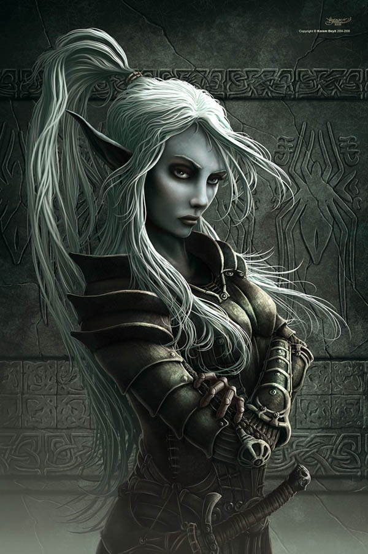

Whistling in the Dark
Moving with caution through the darkness you aren't sure that what you heard wasn't just your imagination.
Suddenly you hear it again! is it... could it be? It's a song!?
Someone is whistling a jaunty little tune down here in the dark.
If you weren't so terrified at being lost in the bowels of the earth you'd be horrified at hearing someone whistling in the bowels of the earth!
As you round the corner a slender figure is working at something on the cave floor.
Glowing mushrooms provide a greenish blue illumination. It's a woman! and a pretty one at that!
Her pointed ears remind you of a something Uncle Shup said "Elves are a stuck up bunch, but if you're ever in trouble they'd move mountains to help ya."
Do you:
Better not take any chances. I'll sneak up and restrain her.
I'm saved! I'll ask her how to get back to the surface, and maybe ask her to marry me!
She may be an elf but Uncle Shup wasn't a wise man. I'll just take this side tunnel and let her go about her business.